endofunctor with natural transformation and hom functor of coslice determines functor from twisted arrows
1. Proposition
Let  be a category,
be a category,
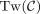
the twisted arrow category,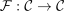
a functor with a natural transformation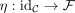
Let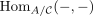
be the hom-functor of the coslice category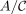
for an object .
.
Then there exists a covariant functor
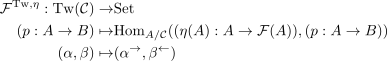
2. Proof
Let
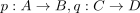
be objects in and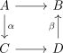
a morphism
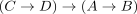
Then we get a commutative diagram
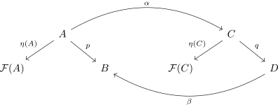
in and using naturality of  also
also
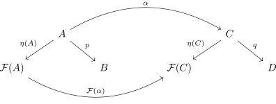
Then precomposition with and postcomposition with  gives a map
gives a map
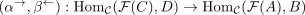
It remains to show that those morphisms are also morphisms in the coslice category, i.e. given an  such that
such that
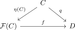
commutes, then the resulting morphism
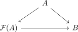
results in a commutative digaram